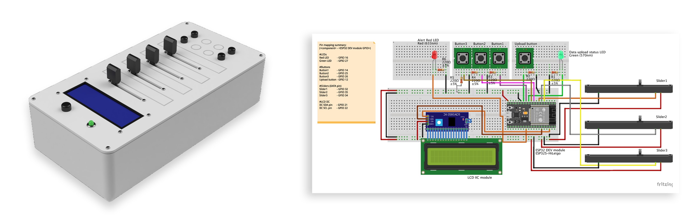
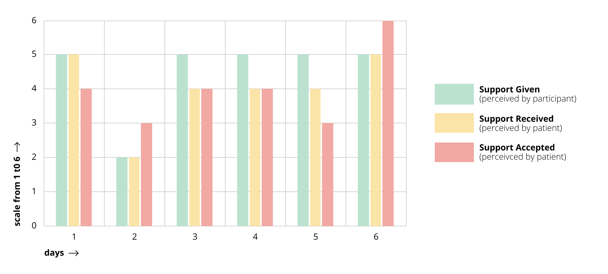
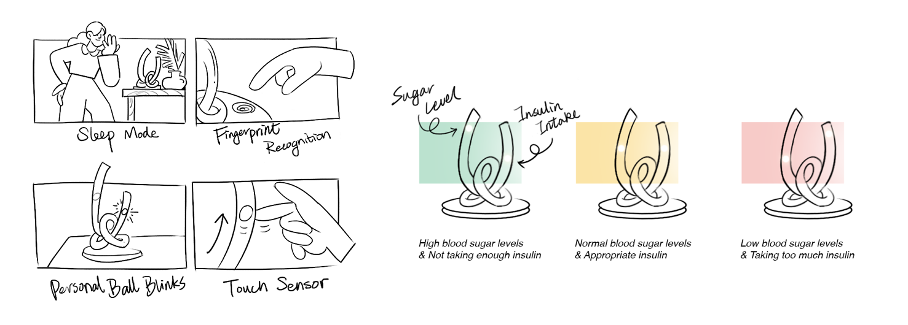

Sugar
A data-enabled design study on friends and family members’ co-responsibility in diabetes type 2 management.
Overall, the number of people with diabetes worldwide has more than doubled over the past three decades.
By means of a data-enabled design approach, this study explored how friends, family, and other people that might support diabetes patients can be assisted in their co-responsible role.
Prototype
My made two self-report devices, i.e. the prototype, to collect the data. The study materials consisted of a measuring device and a Data Foundry chatbot. The measuring device, as shown below, allowed the participant to track answers to the following four questions:
- How much in control do you feel?
- How much attention are you paying to your health?
- How do you feel today?
- ow physically active were you today?
By means of the chatbot, photos of the food and drink intake were captured. The participant was asked to write a short description alongside the photo for analysis purposes later.


Data Analysis
The data from the self-report prototype was sent over for 6 days and then analyzed.
Design Intervention
The design intervention resulting from this project is ‘The Knot’, as can be seen in figures below. The results show that after many years of marriage and experiences with diabetes treatment, a very stable support system between the patient and co-responsible person has been set. Measuring support to track the feelings of given and received support is not needed anymore as the support is already tailored to the existing situation and relationship. However, communicating blood sugar levels is still relevant at this stage. In the beginning stages of a (platonic) relationship or when someone has just been diagnosed, co-responsibility coaching might still be of added value.
